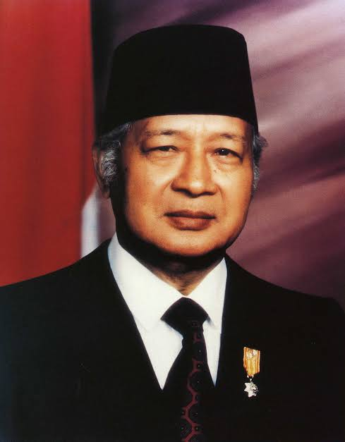

basic card
card title
Gunung Arjuno (terkadang dieja Gunung Arjuna) adalah sebuah gunung
berapi kerucut (istirahat) di Jawa Timur, Indonesia dengan ketinggian
3.339 m dpl. Gunung Arjuno secara administratif terletak di
perbatasan Kota Batu, Kabupaten Malang, dan Kabupaten Pasuruan dan
berada di bawah pengelolaan Taman Hutan Raya Raden Soerjo. Gunung
Arjuno merupakan gunung tertinggi kedua di Jawa Timur setelah Gunung
Semeru, serta menjadi yang tertinggi keempat di Pulau Jawa. Biasanya
gunung ini dicapai dari tiga titik pendakian yang cukup dikenal yaitu
dari Lawang, Tretes dan Batu. Nama Arjuno berasal dari salah satu
tokoh pewayangan Mahabharata, Arjuna.
card title
Gunung Arjuno bersebelahan dengan Gunung Welirang, Gunung Kembar I,
dan Gunung Kembar II. Puncak Gunung Arjuno terletak pada satu
punggungan yang sama dengan puncak gunung Welirang, sehingga
kompleks ini sering disebut juga dengan Arjuno-Welirang. Kompleks
Arjuno-Welirang sendiri berada di dua gunung berapi yang lebih tua,
Gunung Ringgit di timur dan Gunung Lincing di selatan. Area fumarol
dengan cadangan belerang ditemukan di sejumlah lokasi pegunungan ini,
seperti pada puncak Gunung Welirang, puncak Gunung Kembar II, dan
pada sejumlah jalur pendakian.
image card

soeharto
soeharto adalah presiden RI yang ke 2
BJ Habibie
BJ Habibie adalah presiden RI yang ke 3

KH. Abdurrahman Wahid
Gusdur adalah presiden RI yang ke 4